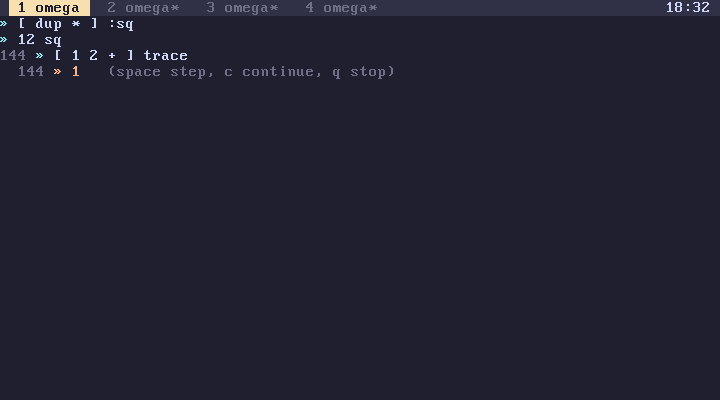

subverge
subvergeFlow
- Choices
- Loops
- Leaving a loop early
- Walking lists
- Running code from data
- Stopping
- Tracing
- Recursion
- Speed
Conditionals and loops are ordinary words that take quotes as arguments. Nothing about them is built into the syntax, so they can be passed around, wrapped and replaced like any other word.
Choices
cond [ then ] [ else ] if
cond [ then ] when
cond [ then ] unless
if runs one of two quotes, when runs its quote only on a true condition and unless only on a false one. The condition is a number: 0 is false and anything else is true, including every bignum. Comparisons leave 1 or 0 (numbers).
x 0 < [ "negative" ] [ "not negative" ] if say
n 100 > [ "big" say ] when
'startup defined? [ startup ] [ sys ] if
A branch that isn't a quote is pushed rather than run, so short choices between values need no brackets:
x 0 < "negative" "not negative" if say
Nothing checks that both branches of an if leave the same number of values. An unbalanced if shows up later, as a stack error in whatever comes after it.
Chains of choices nest:
[ { n }
n 0 < [ "negative" ] [
n 0 = [ "zero" ] [ "positive" ] if ] if
] :sign
Loops
| Word | Effect | |
|---|---|---|
times |
n q -- |
runs q n times |
for |
a b q -- |
runs q with each i from a to b-1 pushed |
while |
test body -- |
runs body as long as test leaves a true value |
do |
q -- |
runs q once |
3 [ "hi" say ] times hi, three times
0 5 [ . ] for 0 1 2 3 4
5 [ dup 0 > ] [ dup . 1 - ] while drop 5 4 3 2 1
times and for take 64-bit integers. A count of zero or less runs nothing, and for with b not above a runs nothing. for pushes the counter before each run and expects the quote to consume it; a quote that leaves it gets one more value on the stack each time.
while runs the test, pops the value it leaves, and runs the body if it is true. The test must be a quote: x 3 < [ ... ] while evaluates x 3 < once, before the loop starts, and passes a number as the test, which is pushed on every round and never changes. The test fails the loop with while needs more values on the stack if it leaves nothing.
Locals bound inside the test quote are gone by the time the body runs, since each quote's locals end with it. Keep loop state in locals bound outside the loop and update them with ->:
0 { i }
[ i 10 < ] [ i . i 1 + ->i ] while
Leaving a loop early
Loops end through their condition. To stop a times or for early, rewrite it as a while with a flag, which is how every bundled program runs its main loop:
1 { going }
[ going ] [
key quit-key? [ 0 ->going ] when
] while
A failing word also ends every loop at once, and the line with it, unless the loop is inside try (catching).
Walking lists
l [ f ] each runs f on every item
l [ f ] map collects f's result for every item
l [ f ] filter keeps the items f approves
These are described with the other list words in quotes. On a string, each walks the bytes.
Running code from data
do runs a quote held in a value:
[ 2 * ] { double }
21 double do . 42
A local holding a quote is pushed, not run, when its name appears, which is why do is needed here. A definition holding a quote is run when its name appears.
eval parses a string and runs it:
"1 2 +" eval . 3
Stopping
Ctrl-C interrupts any running code. The interpreter checks for it before every step, and times, for, while, each, map and filter check between rounds, so even a loop whose body is a single built-in stops promptly. The line fails with interrupted and is undone.
sleep, beep, key and waitkey wait without using the CPU and also respond to Ctrl-C.
Tracing
[ 1 2 + 4 * ] trace
trace runs a quote one step at a time. Before each step it prints the top of the stack and the item about to run, then waits for a key: Space steps, c runs the rest at full speed and q, Escape or Ctrl-C stops with the error stopped. Words called from the quote are traced too, so tracing a call into a large word steps through all of it.

Code being traced is never compiled, since compiled code can't stop between items.
timeit, bench and watch time and repeat quotes (tools).
Recursion
A word can call itself:
[ { n } n 2 < [ n ] [ n 1 - fib n 2 - fib + ] if ] :fib
20 fib . 6765
Every call nests, including calls in the last position of a quote, and nesting stops at 400 quotes with this nests too deep. Interpreted, each level of fib runs two quotes, its own body and a branch of if, so it reaches about 200 levels; compiled, the branch is inlined and only the body counts. Locals add a second limit of 256 live at once, which ends fib with too many local names before 400. Recursion suits trees and divide-and-conquer, whose depth grows slowly; long linear processes belong in a loop.
Speed
The JIT compiles if, when, unless, times, for and while into jumps when their quotes are written directly in front of them and contain no locals or definitions:
0 1000000 [ 1 + ] times compiled into a loop
[ 1 + ] { body } 0 1000000 body times calls the body each round
The second form still works, but each round goes through a call. For hot loops, keep the quotes literal and the values on the stack.